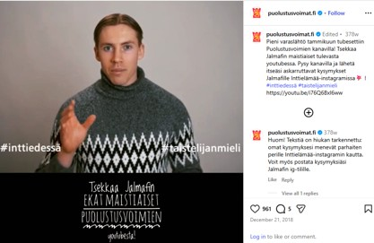
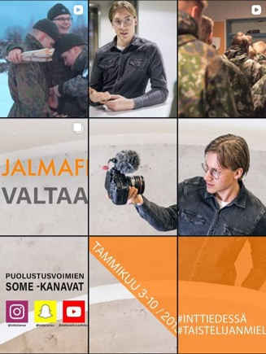
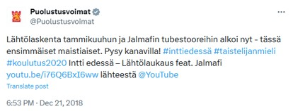
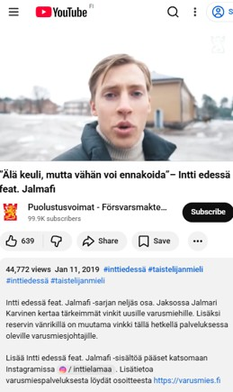
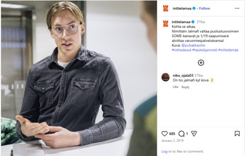
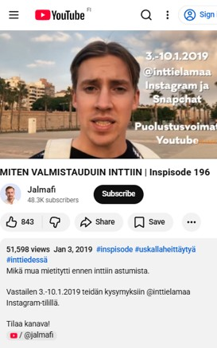

Project title
One or two lines on what the project was and what I did.
Selected projects
Campaigns, launches and content for a range of brands
Influencer collaboration · December 2018 – January 2019






One or two lines on what the project was and what I did.
One or two lines on what the project was and what I did.
One or two lines on what the project was and what I did.
Back to the start
Elisa